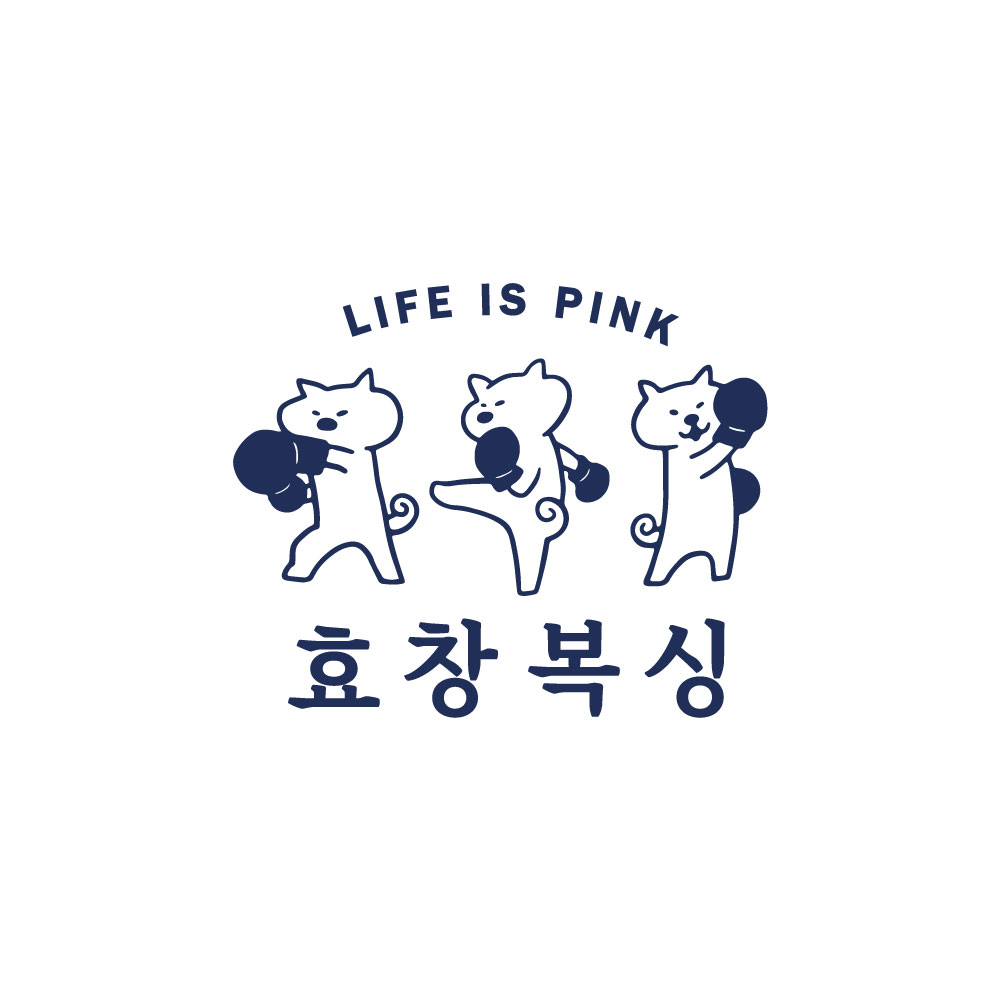
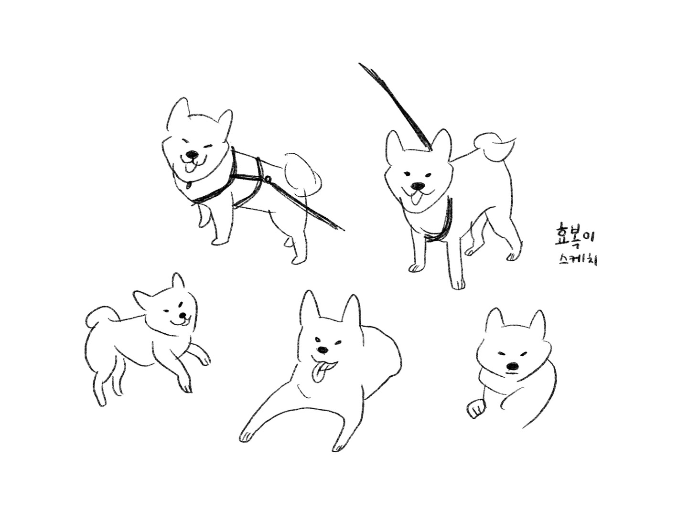
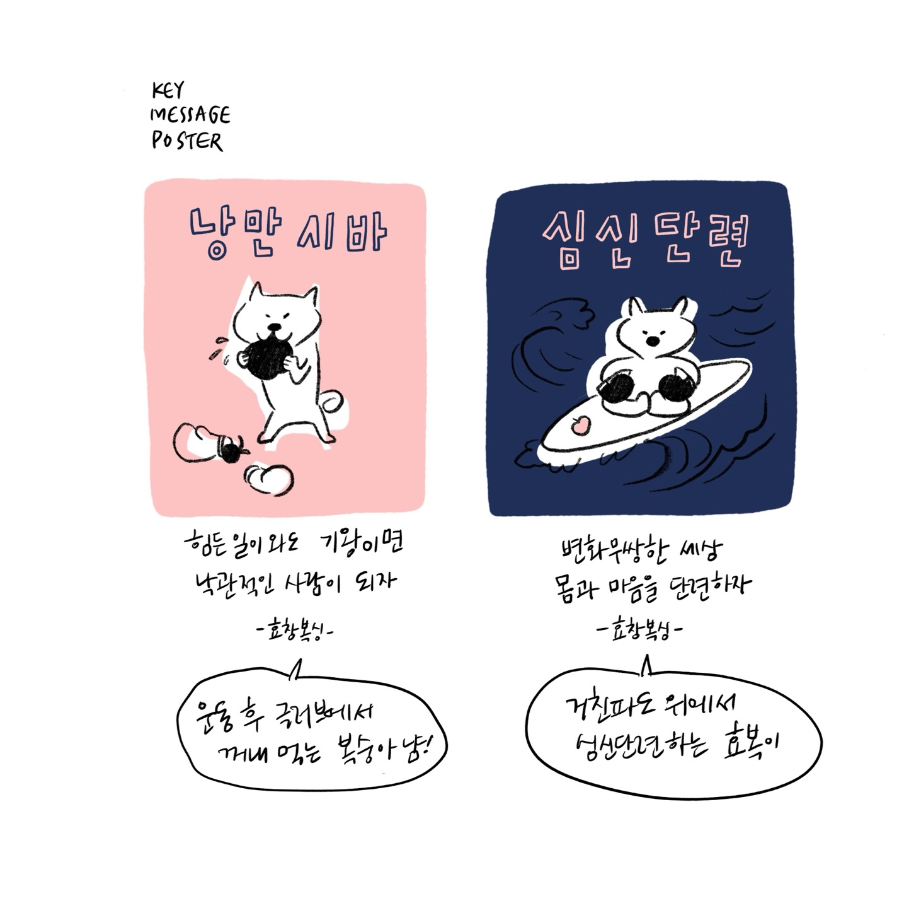
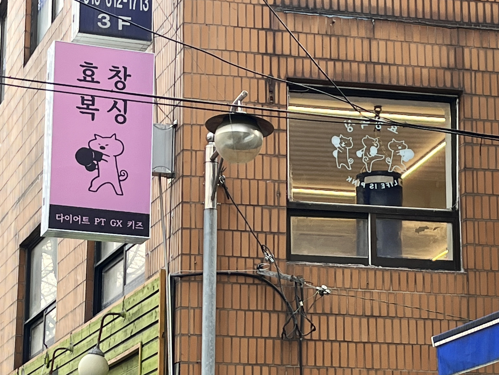
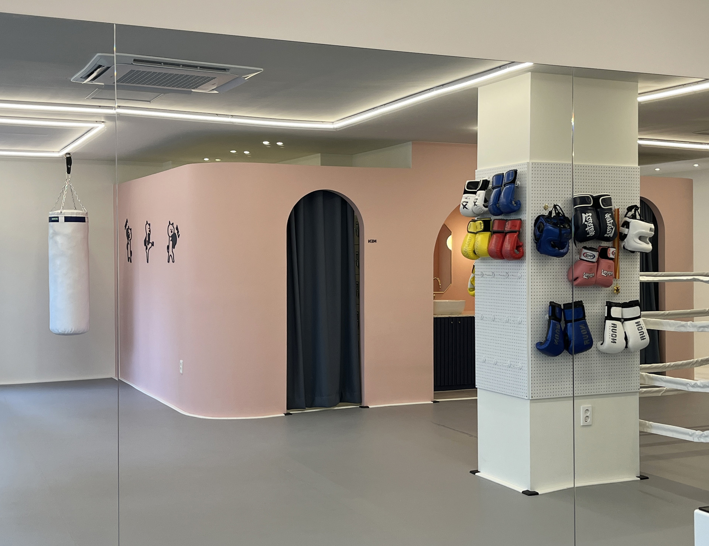
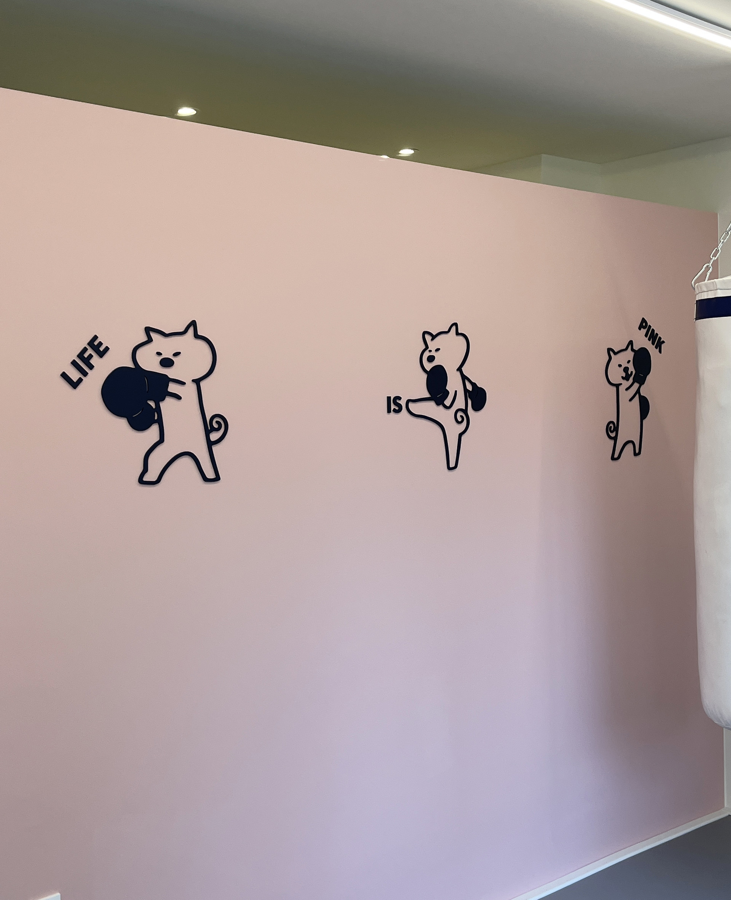
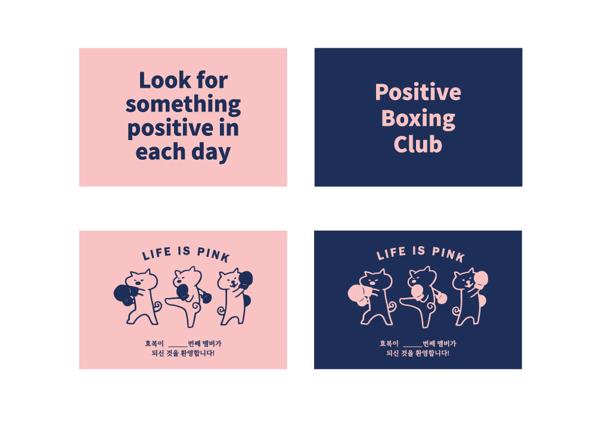
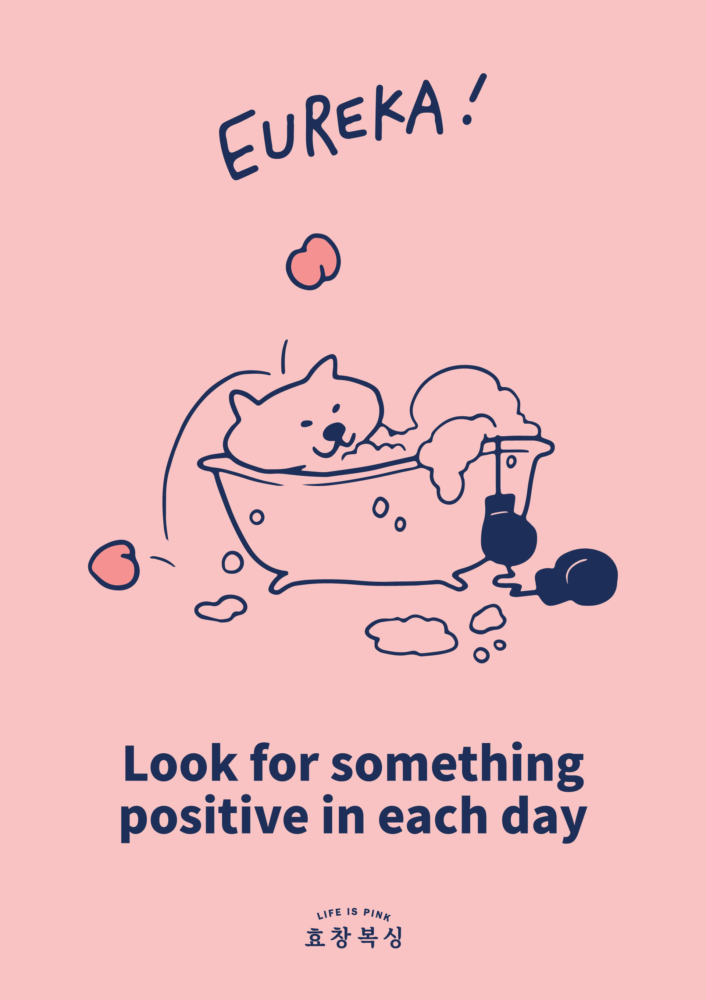
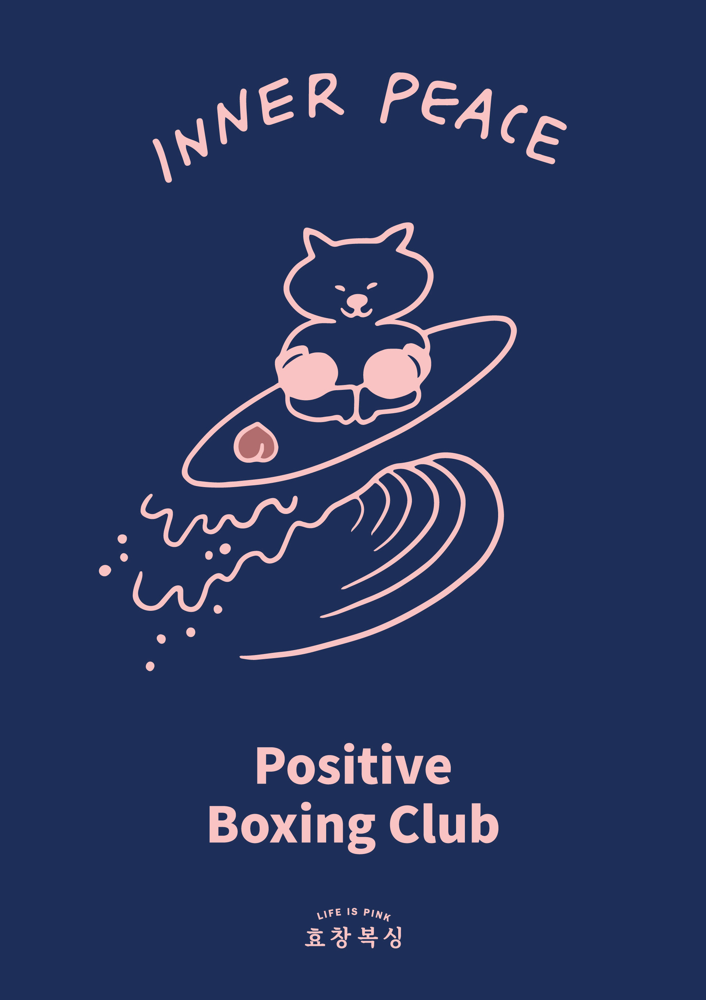
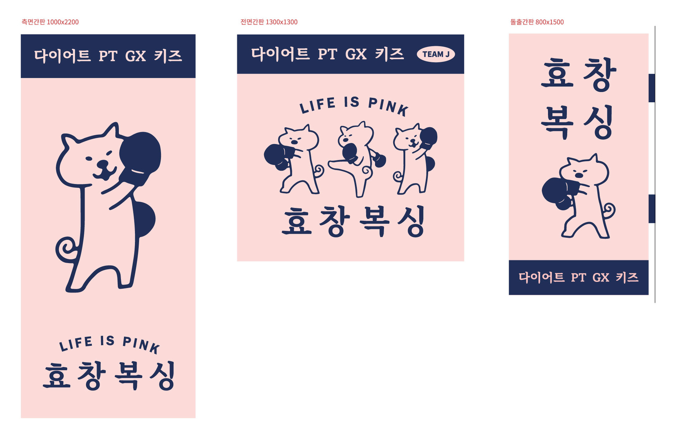
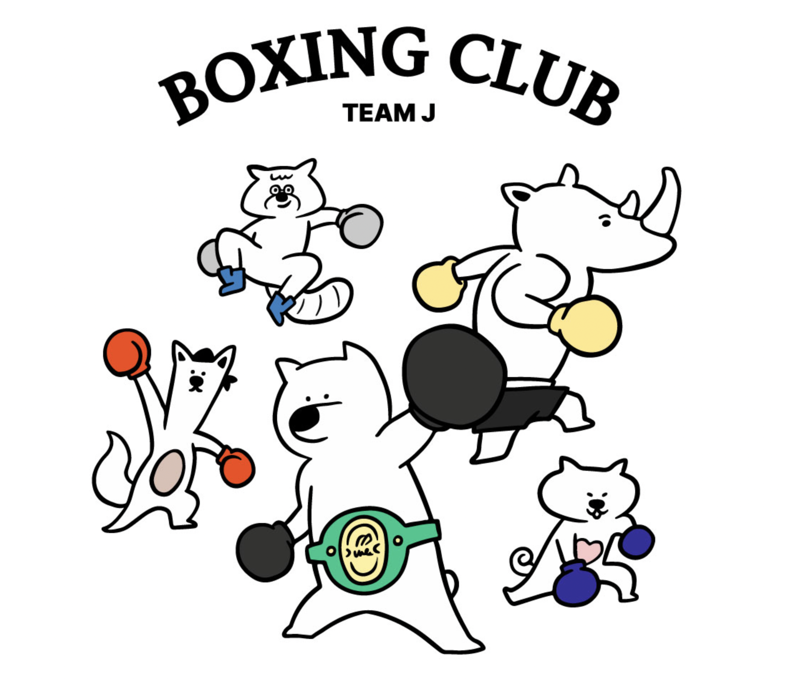
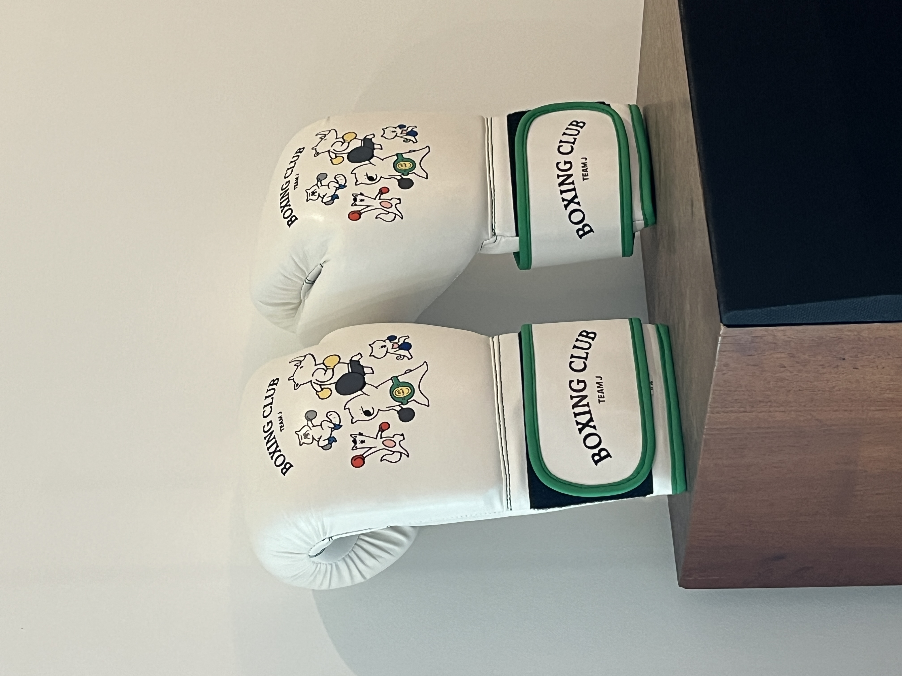
효창복싱의 마스코트 시바견 '효복이'를 그렸어요. 캐릭터의 실제 모델인 반려견을 모델로 스케치했습니다.
아이스크림처럼 말린 꼬리가 특징이고, 무심한듯 웃는 표정이 귀여운 친구입니다. Positive Boxing club의 Key color인 핑크는 낙관주의 운동법을 상징합니다.
I illustrated Hyobogi, the Shiba Inu mascot of Hyochang Boxing. The character was sketched from the owner's real-life dog.
With a signature tail curled like soft-serve ice cream and an effortlessly cheerful expression, Hyobogi is hard not to love. The key color pink represents the club's philosophy of optimistic boxing.